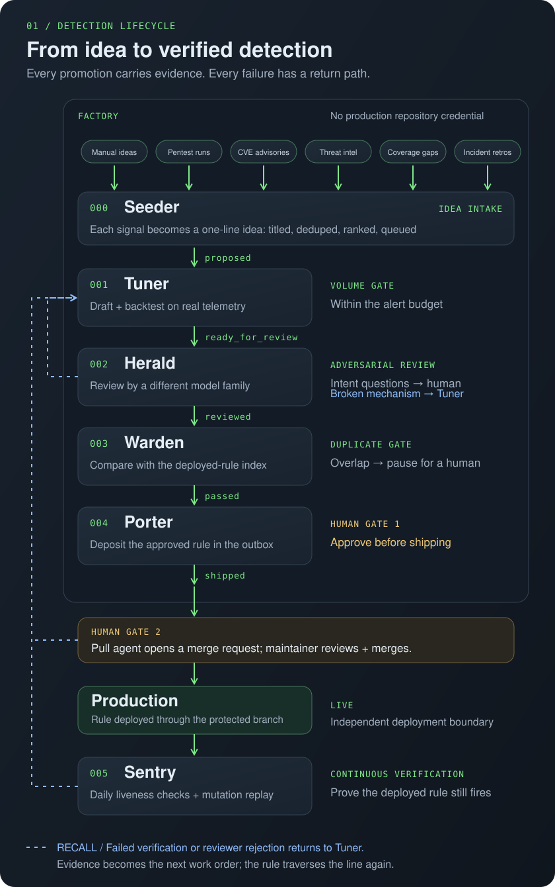
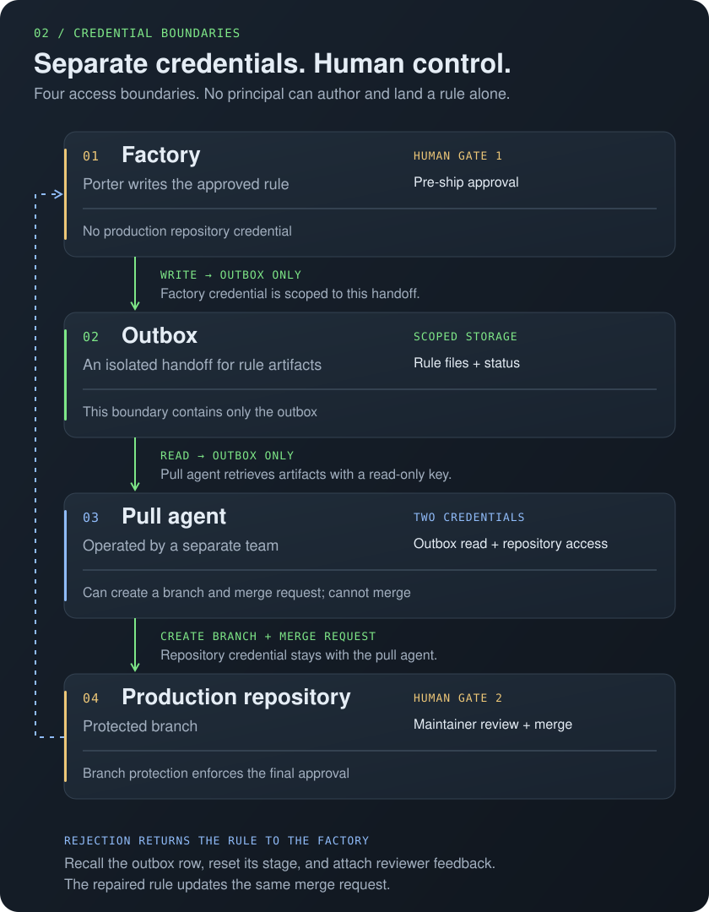

Detection Factory
An assembly line for security detection rules — signal in, proven rule out.
A language model can write a SIEM detection rule in seconds. That was never the hard part. The hard part is trusting it: will it fire a thousand times a day, or never? Did the model invent a field name? Does it duplicate something already deployed? Six months from now, is it still working?
The Detection Factory answers those questions mechanically. A rule moves through a series of stations, and promotion between stations is decided by machine-enforced gates, not by someone eyeballing a diff. Every gate decision is written into the rule file itself as an append-only log, so a rule in production carries its own proof of what it passed.
the line

fig 1 — what feeds the line, the stage each promotion writes, where a human is consulted, and the loops that send a rule back.
- 000Seeder The intake. Watches a set of signal sources and turns each into a one-line detection idea: a title and a blurb, deduped against the backlog and the deployed-rule index, ranked by how much exposure it closes, and queued for the Tuner. Nothing below runs on human typing alone.
- 001Tuner Drafts the rule from a one-line idea, then backtests it against months of real telemetry. Projected alerts per week must land inside a noise budget or the rule doesn't move. Too noisy? It mutes the specific offending values (one IP, one service account) instead of weakening the logic. Zero hits? It relaxes exactly one scoping parameter to prove the mechanism fires, then restores it.
- 002Herald Adversarial review by a model from a different model family than the one that wrote the rule, so author blind spots and reviewer blind spots don't line up. Cosmetic fixes are applied silently; broken mechanisms are demoted back to 001 with a reason; design opinions pause for a human.
- 003Warden Duplicate gate. Compares the candidate against a nightly-synced index of everything already deployed, without touching production at decision time. Novel rules pass; duplicates and partial overlaps go to a human.
- 004Porter Gets explicit human sign-off, then deposits the rule in an isolated outbox. The factory holds no credential that can write to the production repository. A separately operated pull agent picks it up and opens the merge request. If the reviewer rejects it, the rule is recalled through the whole line again and the same merge request is updated in place.
- 005Sentry Post-deployment. Daily checks that the log source still flows and the fields still exist, then replays a freshly sampled, redacted, mutated production event through the rule to prove it still fires. Failures demote the rule back into the factory with the evidence attached.
where ideas come from
Generation was never the bottleneck, so the line shouldn't wait on someone to have an idea. The Seeder subscribes to the places new detection needs actually show up:
- Manual ideas. A human types a title and a sentence. Still the highest-signal source, just no longer the only one.
- Automated pentests. Every technique a scheduled adversary-emulation run executes without an alert is a gap with a ready-made test case attached.
- CVE disclosures. New advisories filtered against the asset inventory. An exploitable CVE in software you actually run seeds a rule for its exploitation pattern.
- Threat intel. Vendor reports, ISAC feeds, and campaign write-ups parsed for techniques and indicators that no deployed rule covers.
- Coverage gaps. The deployed-rule index mapped onto an attack framework, re-scored nightly. Uncovered techniques with available telemetry become candidates.
- Incident retros. Anything found by a hunt, a triage, or a post-mortem that no rule caught is, by definition, a missing detection.
- New log sources. A log type arriving in the SIEM for the first time seeds a baseline set of rules for it.
- Sentry demotions. Not a new idea but the same intake: a rule that died of schema drift re-enters here with the diff as its work order.
no station talks to another
Stations share nothing except a state table. Each rule row has a stage column that acts as the
routing key: a station polls for rows in its inbox stage, claims one, does its work, rewrites the stage, and exits.
That's the whole integration layer. Any station can crash at any moment and nothing is lost, N copies
of a station can run in parallel, and "send this rule back two steps" is a column rewrite with a reason
attached. No queue, no broker, no scheduler.
why deployment is shaped like that

fig 2 — who holds which credential. Two humans, two keys, two teams, and none of them can land a change alone.
An autonomous pipeline that can write to the detection repository and effectively approve its own changes is a supply-chain risk: one leaked token poisons every detection you have. So the factory can only write to an outbox in its own access boundary. The pull agent, run by a different team, has a read-only key scoped to that outbox and nothing else, and it alone holds the repository credential. Branch protection means its role can't merge either.
what you get
- Alert volume is bounded by construction. Nothing over budget reaches production.
- Rules for attacks that have never happened are still provable, not just hopeful.
- Idea to validated, tuned, reviewed rule in minutes rather than days.
- Every production rule carries a machine-verifiable record of the gates it passed.
- Rules that silently rot get caught by daily replay and recalled for repair.
Station names are callsigns, not products.